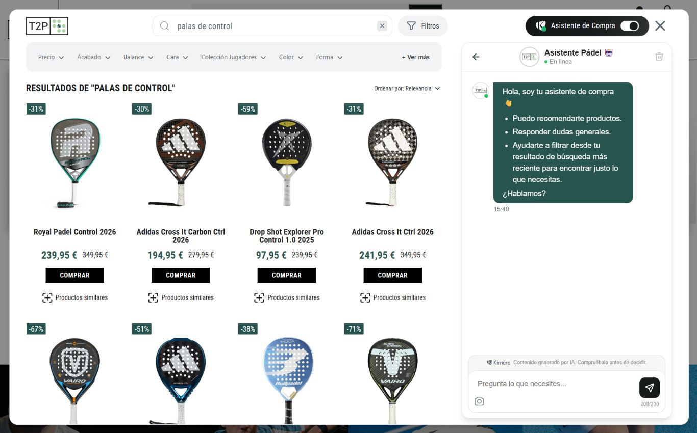
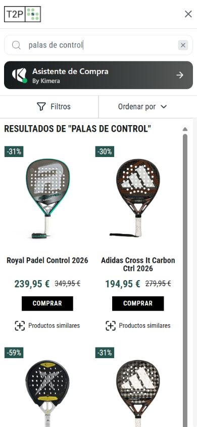
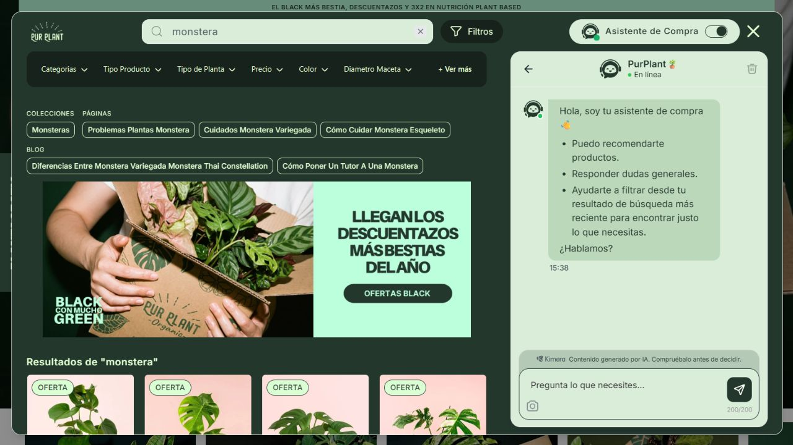
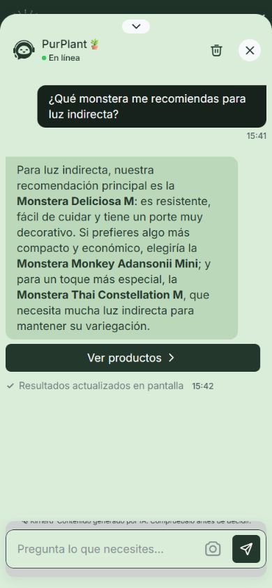
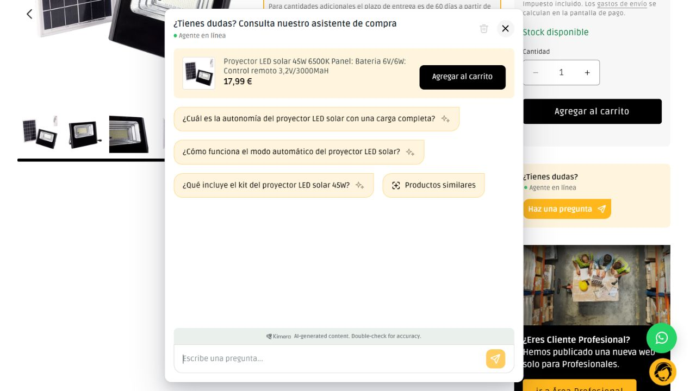
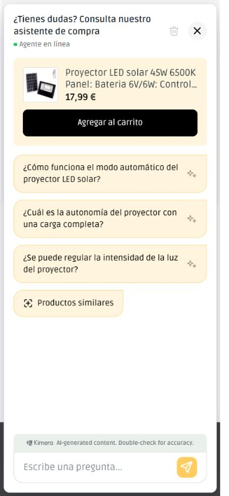

Designing how people find, compare and choose products.
I design Kimera’s AI search and shopping assistant, from the first query to the product detail page, across desktop and mobile. I’m also redesigning the retailer back office. I work with developers to bring the interfaces I design into client stores and keep improving them after launch.
Role
Senior Product Designer
Timeline
2026–present
Scope
Search & assistants · Retailer back office · Design system
Product preview


Time2Padel · Desktop and mobile search with racket results, filters and access to the shopping assistant.


Pur Plant · The assistant sits beside desktop results. On mobile, it recommends plants for indirect light.


GreenIce · The product-page assistant keeps the selected solar light in context while shoppers explore technical questions and alternatives.
01 / What I design
From the first query to the final decision.
Kimera interprets natural-language queries using catalog text and images. I turn that capability into the interface shoppers use, designing how they get from describing a need to deciding what to buy.
I design the shared patterns for desktop and mobile and adapt them to each store. Pur Plant is one example where our team matched the search and assistant to the store’s visual identity.
AI search
I design results, filters and empty states so shoppers can see what matches and refine a request that’s too broad or returns nothing.
Shopping assistant
I design how the conversation and product results work together. Shoppers can clarify what they want, narrow the selection and compare options while keeping the catalog in view.
Product detail page assistant
I design the assistant in the product detail page around the item the shopper is viewing. It answers questions about use, care or compatibility where those doubts arise, before the shopper adds the item to their cart.
I design the shared interactions and adapt them to each retailer’s brand, catalog and available features. These captures show how the same design system works across different shopping decisions on desktop and mobile.
I carefully matched the search interface to Joyería Suárez’s elegant, clean visual identity. Restrained typography, a neutral palette and generous spacing keep the jewellery at the centre on desktop and mobile.
I adapted the search and assistant to Pur Plant’s visual identity. The search connects a query to products and care content, while the assistant can turn a constraint like indirect light into a recommendation.
Desktop search and shopping assistant. The Monstera search brings products, collections and care articles into the same view, with the assistant beside the results.Mobile search. Suggestions and the assistant entry stay within reach above the catalog.
See the product-page assistant and mobile conversation
Mobile product-page assistant. The Baobab Mini, common care questions and similar plants stay together on a small screen.Mobile shopping assistant. A question about indirect light leads to plant recommendations and a link to the suggested products.
I design the path from technical results to questions about use. When a shopper reaches a specific fixture, the product-page assistant starts from that item and offers questions about things such as setup and battery life.
Mobile search. The two-column grid keeps prices, specifications and similar products visible below the assistant entry.
See the product-page assistant and mobile conversation
Desktop product-page assistant. The selected solar floodlight anchors the panel, alongside suggested questions and similar products.Mobile product-page assistant. Suggested questions about operation, battery life and dimming are available from the selected light’s panel.
I keep the shortlist visible as shoppers move from search into guidance. On the product page, the assistant carries the exact racket into the conversation so the shopper can ask about that model.
Desktop search and shopping assistant. A search for «palas de control» shows racket options and a way to ask for guidance side by side.Mobile search. The results, filters and shopping-assistant entry remain available within the compact view.
See the product-page assistant and mobile conversation
I keep query suggestions, filters and visual alternatives close to the results. On desktop, the assistant stays alongside the trail-running catalog as shoppers browse.
Mobile shopping assistant. The drawer opens below the trail-shoe results and keeps the query and filters visible.
03 / Back office & Business Intelligence
Give retailers a way to act on what shoppers ask.
I’m redesigning the back office alongside the storefront. On this side of the product, I design for the e-commerce team that has to understand what shoppers are struggling to find or decide, and choose what to improve.
From conversations to recommendations
Kimera announced its Business Intelligence module in November 2026. It analyzes searches and assistant conversations to surface recommendations, from correcting incomplete or contradictory product details to addressing recurring questions or checking unmet needs against the current assortment and stock.
Make the next decision clear
The design challenge is to make it clear what each finding is based on and what the retailer can review next.
GreenIce’s catalog includes lighting specifications shoppers may struggle to name. In a 30-day A/B test, agency viva! split traffic equally between Kimera and Shopify’s native search, keeping the catalog and campaigns the same.
Completed purchases
+32%
Relative conversion uplift
+29%
Additional test revenue
€44,000
Conversion rose from 1.43% to 1.85% across desktop and mobile combined. These figures compare the two search experiences during the test.
I design flows and components in Figma and work with Claude through MCP and with Codex every day to explore alternatives, prototype interactions and work through implementation with developers.
Learn from each release
As we launch new products and iterate on existing ones, I use real shopper queries to inform design changes. After release, search success, conversion and assistant engagement help us decide what to revisit.